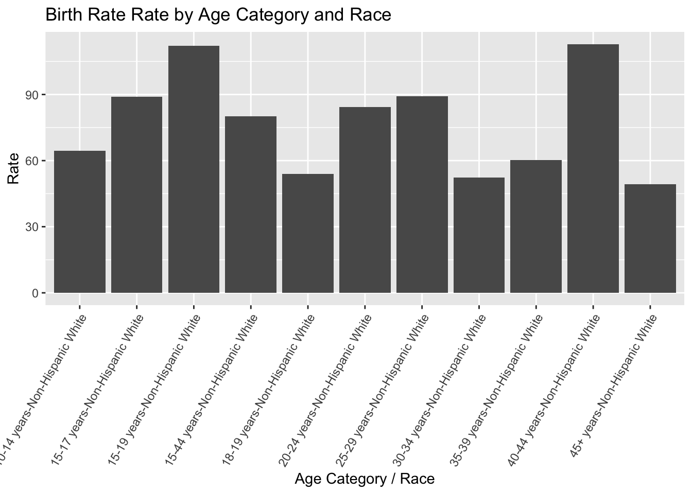

I accessed the data for this assignment at this link. I chose a data set from the National Center for Health Statistics (NCHS) that provides data on quarterly provisional estimates for selected birth indicators. These indicators include teen birth rate, low birth weight, NICU admissions, pre-term births, etc. These indicators are stratified by race/ethnicity and age groups. There is an overall Rate column that is subsetted into “per 100 births” or “per 1,000 population.”
I am now going to load any required packages along with the original, uncleaned data set.
library(readr)library(here)
here() starts at /Users/ehardinparker/Desktop/Completed/CPH_Spring24/BIOS8060E/emmahardinparker-MADA-portfolio
── Conflicts ────────────────────────────────────────── tidyverse_conflicts() ──
✖ dplyr::filter() masks stats::filter()
✖ dplyr::lag() masks stats::lag()
ℹ Use the conflicted package (<http://conflicted.r-lib.org/>) to force all conflicts to become errors
Rows: 900 Columns: 8
── Column specification ────────────────────────────────────────────────────────
Delimiter: ","
chr (7): Year and Quarter, Topic, Topic Subgroup, Indicator, Race Ethnicity ...
dbl (1): Rate
ℹ Use `spec()` to retrieve the full column specification for this data.
ℹ Specify the column types or set `show_col_types = FALSE` to quiet this message.
View(nchs_data)
Initial Data Exploration and Cleaning
I am now going to get a quick look at the data by using the str(), summary(), and glimpse() functions.
Year and Quarter Topic Topic Subgroup Indicator
Length:900 Length:900 Length:900 Length:900
Class :character Class :character Class :character Class :character
Mode :character Mode :character Mode :character Mode :character
Race Ethnicity Category Rate Unit
Length:900 Min. : 0.100 Length:900
Class :character 1st Qu.: 7.595 Class :character
Mode :character Median : 14.900 Mode :character
Mean : 28.160
3rd Qu.: 48.532
Max. :114.300
Significant
Length:900
Class :character
Mode :character
The data set has 1,110 observations and 8 variables. At first glance there doesn’t seem to be any NA values, but I am going to check using the NA values. After print nchs_na, I found that there were no NA values, however, I took that command out as it printed “FALSE” for every observation in the data set.
To accomplish this I used the is.na() function to determine if there were any NA values in the data set. I then mutated the Significant column to treat the observations as characters (* or missing) by using as.character(). I then mutated a new variable, Significance_Status to recode the missing values as zeroes and the asteriks as ones.
Exploratory Data Analysis
I am now going to create an exploratory plot to see which race/ethnicity category had the largest birth rate by Year & Quarter.
filtered_race <- nchs_recode %>%filter(`Race Ethnicity Category`!="All races and origins") # Remove rows where 'Race' is "All"birth_rate_bar <- filtered_race %>%group_by(`Year and Quarter`) %>%filter(Topic =="Birth Rates") %>%ggplot(aes(x =interaction(Indicator, RaceEthnicityCategory), y = Rate, fill =`Race Ethnicity Category`)) +geom_bar(stat ="identity", position ="dodge") +labs(title ="Birth Rate Rate by Age Category and Race",x ="Age Category / Race",y ="Rate") +scale_x_discrete(labels =function(x) gsub("\\.", "-", x)) +theme(axis.text.x =element_text(angle =60, hjust =1)) hispanic_rate_bar <- nchs_recode %>%filter(`Race Ethnicity Category`=="Hispanic") %>%filter(Topic =="Birth Rates") %>%group_by(`Year and Quarter`) %>%ggplot(aes(x =interaction(Indicator, `Race Ethnicity Category`), y = Rate, fill =`Race Ethnicity Category`)) +geom_bar(stat ="identity", position ="dodge") +labs(title ="Birth Rate Rate by Age Category and Race",x ="Age Category / Race",y ="Rate") +scale_x_discrete(labels =function(x) gsub("\\.", "-", x)) +theme(axis.text.x =element_text(angle =60, hjust =1)) white_rate_bar <- nchs_recode %>%filter(`Race Ethnicity Category`=="Non-Hispanic White") %>%filter(Topic =="Birth Rates") %>%group_by(`Year and Quarter`) %>%ggplot(aes(x =interaction(Indicator, `Race Ethnicity Category`), y = Rate)) +geom_bar(stat ="identity", position ="dodge") +labs(title ="Birth Rate Rate by Age Category and Race",x ="Age Category / Race",y ="Rate") +scale_x_discrete(labels =function(x) gsub("\\.", "-", x)) +theme(axis.text.x =element_text(angle =60, hjust =1)) +scale_color_viridis_d()black_rate_bar <- nchs_recode %>%filter(`Race Ethnicity Category`=="Non-Hispanic Black") %>%filter(Topic =="Birth Rates") %>%group_by(`Year and Quarter`) %>%ggplot(aes(x =interaction(Indicator, `Race Ethnicity Category`), y = Rate)) +geom_bar(stat ="identity", position ="dodge") +labs(title ="Birth Rate Rate by Age Category and Race",x ="Age Category / Race",y ="Rate") +scale_x_discrete(labels =function(x) gsub("\\.", "-", x)) +scale_color_viridis_b() +theme(axis.text.x =element_text(angle =45, hjust =1)) print(hispanic_rate_bar)
print(black_rate_bar)
print(white_rate_bar)
I am now going to create plots exploring the rate of low birthweight (per 100 births) by race
I am now going to create a similar plot concerning NICU admission rates per 100 births by race.
NICU <- filtered_race %>%filter(`Topic Subgroup`=="NICU Admission Rates") %>%group_by(`Race Ethnicity Category`) %>%ggplot(aes(x =interaction(Indicator, `Race Ethnicity Category`), y = Rate, fill =`Race Ethnicity Category`)) +geom_bar(stat ="identity", position ="dodge") +labs(title ="NICU Admission Rates by Age Category and Race",x ="Race",y ="Rate") +scale_x_discrete(labels =function(x) gsub("\\.", "-", x)) +scale_color_identity() +theme(axis.text.x =element_text(angle =45, hjust =1)) print(NICU)
I am now going to create a similar plot exploring Teen Birth Rates by Age Category and Race
teen_birth <- filtered_race %>%filter(`Topic Subgroup`=="Teen Birth Rates") %>%group_by(`Race Ethnicity Category`) %>%ggplot(aes(x =interaction(Indicator, `Race Ethnicity Category`), y = Rate, fill =`Race Ethnicity Category`)) +geom_bar(stat ="identity", position ="dodge") +labs(title =" Teen Birth Rate Rate by Age Category and Race",x ="Age Category / Race",y ="Rate") +scale_x_discrete(labels =function(x) gsub("\\.", "-", x)) +scale_color_viridis_b() +theme(axis.text.x =element_text(angle =45, hjust =1)) print(teen_birth)
This section contributed by KEVIN KOSEWICK.
For this section, I’ll create a synthetic dataset that attempts to mimic the original as closely as possible. To do this, I’ll scramble the variables (in the way that a synthetic scrambled set was produced in the module for synthetic data) that Emma explored originally and reproduce her analyses and see what we get.
#set seed for reproducabilityset.seed(123)# Create a copy of the original data framefiltered_copy <- filtered_race# Scramble the column in the copied data framefiltered_copy$Rate <-sample(filtered_race$Rate)#check the new scrambled set to make sure everything is the same except for the numbers we wanted to changesummary(filtered_copy)
Year and Quarter Topic Topic Subgroup Indicator
Length:675 Length:675 Length:675 Length:675
Class :character Class :character Class :character Class :character
Mode :character Mode :character Mode :character Mode :character
Race Ethnicity Category Rate Unit
Length:675 Min. : 0.100 Length:675
Class :character 1st Qu.: 7.545 Class :character
Mode :character Median : 15.500 Mode :character
Mean : 28.563
3rd Qu.: 48.775
Max. :114.300
Significant Significance_Status
Length:675 Min. :1
Class :character 1st Qu.:1
Mode :character Median :1
Mean :1
3rd Qu.:1
Max. :1
NA's :621
Year and Quarter Topic Topic Subgroup Indicator
Length:675 Length:675 Length:675 Length:675
Class :character Class :character Class :character Class :character
Mode :character Mode :character Mode :character Mode :character
Race Ethnicity Category Rate Unit
Length:675 Min. : 0.100 Length:675
Class :character 1st Qu.: 7.545 Class :character
Mode :character Median : 15.500 Mode :character
Mean : 28.563
3rd Qu.: 48.775
Max. :114.300
Significant Significance_Status
Length:675 Min. :1
Class :character 1st Qu.:1
Mode :character Median :1
Mean :1
3rd Qu.:1
Max. :1
NA's :621
We can see that the numbers have clearly been swapped around for the Rate column. Now, we can create the same plots Emma did on our scrambled set and see how things have changed.
birth_rate_bar2 <- filtered_copy %>%group_by(`Year and Quarter`) %>%filter(Topic =="Birth Rates") %>%ggplot(aes(x =interaction(Indicator, `Race Ethnicity Category`), y = Rate, fill =`Race Ethnicity Category`)) +geom_bar(stat ="identity", position ="dodge") +labs(title ="Birth Rate Rate by Age Category and Race",x ="Age Category / Race",y ="Rate") +scale_x_discrete(labels =function(x) gsub("\\.", "-", x)) +theme(axis.text.x =element_text(angle =60, hjust =1)) hispanic_rate_bar2 <- filtered_copy %>%filter(`Race Ethnicity Category`=="Hispanic") %>%filter(Topic =="Birth Rates") %>%group_by(`Year and Quarter`) %>%ggplot(aes(x =interaction(Indicator, `Race Ethnicity Category`), y = Rate, fill =`Race Ethnicity Category`)) +geom_bar(stat ="identity", position ="dodge") +labs(title ="Birth Rate Rate by Age Category and Race",x ="Age Category / Race",y ="Rate") +scale_x_discrete(labels =function(x) gsub("\\.", "-", x)) +theme(axis.text.x =element_text(angle =60, hjust =1)) white_rate_bar2 <- filtered_copy %>%filter(`Race Ethnicity Category`=="Non-Hispanic White") %>%filter(Topic =="Birth Rates") %>%group_by(`Year and Quarter`) %>%ggplot(aes(x =interaction(Indicator, `Race Ethnicity Category`), y = Rate)) +geom_bar(stat ="identity", position ="dodge") +labs(title ="Birth Rate Rate by Age Category and Race",x ="Age Category / Race",y ="Rate") +scale_x_discrete(labels =function(x) gsub("\\.", "-", x)) +theme(axis.text.x =element_text(angle =60, hjust =1)) +scale_color_viridis_d()black_rate_bar2 <- filtered_copy %>%filter(`Race Ethnicity Category`=="Non-Hispanic Black") %>%filter(Topic =="Birth Rates") %>%group_by(`Year and Quarter`) %>%ggplot(aes(x =interaction(Indicator, `Race Ethnicity Category`), y = Rate)) +geom_bar(stat ="identity", position ="dodge") +labs(title ="Birth Rate Rate by Age Category and Race",x ="Age Category / Race",y ="Rate") +scale_x_discrete(labels =function(x) gsub("\\.", "-", x)) +scale_color_viridis_b() +theme(axis.text.x =element_text(angle =45, hjust =1)) #compare new to originalprint(hispanic_rate_bar2)
print(black_rate_bar2)
print(white_rate_bar2)

print(hispanic_rate_bar)
print(black_rate_bar)
print(white_rate_bar)
We can see that these distributions are very different, yet the structure of the data is the same. Scrambling the rates has totally changed the analysis we produce; the data has gone from a relatively normal distribution from the original dataset to a pretty random distribution in the scrambled data. Let’s look at the other plots.
Now, the data makes no sense in the scrambled set. Late preterms are higher than total preterms in Hispanic and Black data, where early and late are far higher than total in the hispanic white data. The original set followed a much more logical pattern. Let’s recreate the NICU admission plots.
NICU2 <- filtered_copy %>%filter(`Topic Subgroup`=="NICU Admission Rates") %>%group_by(`Race Ethnicity Category`) %>%ggplot(aes(x =interaction(Indicator, `Race Ethnicity Category`), y = Rate, fill =`Race Ethnicity Category`)) +geom_bar(stat ="identity", position ="dodge") +labs(title ="NICU Admission Rates by Age Category and Race",x ="Race",y ="Rate") +scale_x_discrete(labels =function(x) gsub("\\.", "-", x)) +scale_color_identity() +theme(axis.text.x =element_text(angle =45, hjust =1)) print(NICU2)
print(NICU)
We can see that the rates are far higher in the scrambled data than the original data. The distribution has also changed, with White NICU Admissions being much higher than the original set. Let’s explore the last plot’s differences.
teen_birth2 <- filtered_copy %>%filter(`Topic Subgroup`=="Teen Birth Rates") %>%group_by(`Race Ethnicity Category`) %>%ggplot(aes(x =interaction(Indicator, `Race Ethnicity Category`), y = Rate, fill =`Race Ethnicity Category`)) +geom_bar(stat ="identity", position ="dodge") +labs(title =" Teen Birth Rate Rate by Age Category and Race",x ="Age Category / Race",y ="Rate") +scale_x_discrete(labels =function(x) gsub("\\.", "-", x)) +scale_color_viridis_b() +theme(axis.text.x =element_text(angle =45, hjust =1)) print(teen_birth2)
print(teen_birth)
The data is completely different in the scrambled set than the original. All of these changes are to be expected as we scrambled the dataset to create synthetic data instead of replicating it.